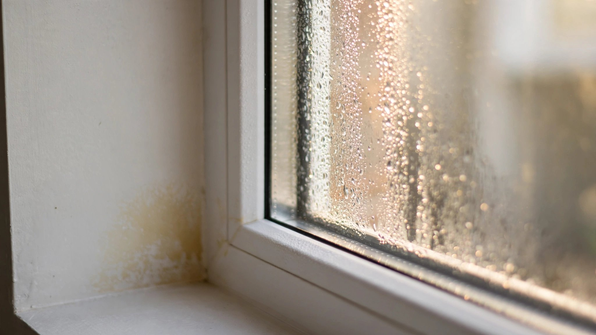

A Random Forest Can Tell Which Homes Will Grow Mold. Nobody Built the App.

Walk into a home built in the last ten years in Houston, or Charleston, or anywhere along the Gulf Coast where summer dew points routinely hit 75 degrees, and you will find a tight building envelope. Spray foam in the walls. Taped housewrap. A blower door test certificate stapled to the permit file. Everything the energy code asked for. Everything the moisture gods did not.
By year three, the homeowner notices a smell in the master closet. By year five, the insurance adjuster is quoting $15,000 to $30,000 for remediation. By year seven, the house is listed for sale and the disclosure form says "mold remediation completed, no recurring issues," which is a statement of fact and a prayer and a liability, all in one sentence.
Nobody did anything wrong. Code official signed off. Insulation contractor followed the spec. And a machine learning model, trained on six variables that were available before the first nail went in, could have flagged the risk before anyone ordered drywall.
The Model That Exists
In 2025, researchers published a study in Nature Scientific Reports that applied a random forest classifier to predict which homes would develop damp and mold problems based on construction characteristics alone. No sensors. No moisture meters. No site visits. Just data that already sits in building permits, energy audits, and property records: wall construction type, insulation level, heating system, energy efficiency rating, property size, and age.
Every other algorithm lost to the random forest. Balanced models showed superior recall and F-measure, correctly flagging homes at risk rather than simply defaulting to the majority class of "no mold." SHAP analysis revealed which variables mattered most: high modeled heating costs, low energy efficiency ratings, and smaller property sizes all correlated with elevated damp risk. One finding was counterintuitive. Walls rated "Average" for energy efficiency showed lower mold risk than walls rated "Good." Tighter envelopes, it turned out, were trapping moisture in assemblies that lacked adequate drying potential.
Its conclusion was measured. Machine learning "does indeed have the capability to predict a home's risk of damp based on construction details." That sentence, buried in the discussion section of an academic paper, describes a tool that could change residential construction. Nobody has built it.
Seventy Billion Dollars in Damage, and Counting
Mold remediation is one of the most common and most contentious costs in American homeownership. The average professional remediation runs $1,200 to $3,750, according to 2026 data from Angi and HomeAdvisor. Whole-house jobs after flooding reach $10,000 to $30,000. The Insurance Information Institute puts the average mold-related insurance claim between $15,000 and $30,000, at least five times the average non-mold homeowner claim.
Twenty-two percent of all homeowners insurance claims fall under "water damage and freezing," a category that includes mold remediation. Most standard policies cap mold coverage at $1,000 to $10,000, leaving the homeowner to cover the gap between what the remediation costs and what the insurer pays. Mold riders exist, but premiums run $500 to $2,000 a year for $10,000 to $50,000 in coverage. In humid states, the riders are often unavailable at any price.
After a wave of mold litigation in the early 2000s, nearly every state adopted mold coverage limitations. Insurers responded rationally to the risk. What they did not do was invest in predicting which homes would generate those claims before the policies were written.
Why Tight Homes Grow Mold
Building science has understood the mechanism for decades. Moisture moves through building envelopes in two ways: bulk water intrusion (rain getting in through a failed flashing detail) and vapor diffusion (warm, humid air reaching a cold surface inside the wall assembly and condensing). Energy codes have been tightening envelopes to reduce air leakage since the 2009 International Energy Conservation Code, and every three-year update has pushed the numbers lower. A 2024 code-compliant home in Climate Zone 2A must hit 3 ACH50 or less on its blower door test. That is tight enough to trap moisture inside wall cavities if the assembly's vapor permeance profile is wrong.
ASHRAE Standard 160, Criteria for Moisture-Control Design Analysis in Buildings, provides a framework for evaluating whether a wall assembly will accumulate moisture under given climate conditions. It specifies interior and exterior boundary conditions, moisture sources, and performance criteria. Hygrothermal simulation tools like WUFI can model the hourly movement of heat and moisture through an assembly over multiple years. For commercial buildings and high-performance residential projects, this analysis is routine. For the 1.4 million single-family homes started in America each year, it is almost never performed.
A 2026 study published in MDPI Buildings examined how climate change will affect mold risk in existing residential wall assemblies. Using WUFI 2D simulations with projected future weather files, the researchers found that current facade designs have been "largely underexamined" for resilience to future moisture conditions. Pine and spruce sapwood, the species most commonly used for residential framing, showed "very high sensitivity to mold growth" in laboratory studies. Walls designed for the climate of 2005 will be performing in the climate of 2045, and nobody has run the model to see whether they survive.
The Post-Flood Model
A separate team took a different approach. Published in Environmental International in 2025, their study built the first quantitative model for predicting indoor mold spore levels after extreme flooding. Working with data from 60 homes in the aftermath of Hurricanes Ida and Ian, the researchers compiled a building-level database that included flood characteristics, building properties, human indoor activities, and measured mold spore counts from laboratory analysis.
Their regression model achieved an R-squared of 0.83, meaning it explained 83 percent of the variance in post-flood mold contamination. Inputs were straightforward: how deep the water got, how long it sat, what the building was made of, and what the occupants did after the water receded. The researchers noted that the model could support insurance companies, public health officials, and emergency managers in assessing flood impacts on respiratory health.
That paper was published eighteen months ago. No insurance company has integrated the model into its claims process. No emergency management agency has deployed it for flood response triage. FEMA's Individual Assistance program still dispatches inspectors to evaluate damage one house at a time, weeks after the water recedes and well after the 48-hour window in which mold colonization becomes difficult to prevent.
What an Inspector Could Carry
A home inspector today arrives with a flashlight, a moisture meter, and a checklist. The moisture meter reads surface moisture at discrete points. The inspector probes a dozen spots in a three-hour inspection and records whether the reading is elevated. That is the state of mold risk assessment in residential real estate: a point-in-time, point-in-space measurement that tells you whether water is present right now, in the exact spot you checked, on the day you visited.
What the random forest model offers is structurally different. It takes the construction characteristics of the home, characteristics that do not change between inspection visits, and returns a probability that the home will develop damp or mold problems over its lifetime. An inspector could enter wall type, insulation material, heating system, ventilation type, property age, and energy efficiency score into a tablet app and receive a risk rating before opening the front door.
Researchers at the University of Salford took the visual detection angle further. Researchers there developed the IntelOptic app, which uses machine learning to identify mold from photographs. Teaching the algorithm to recognize mold was harder than it sounds. Mold has no uniform shape, grows in irregular patterns, and varies in color depending on species and substrate. The team trained the model on patterns and color signatures rather than geometric features and achieved 76 percent accuracy. That is not high enough for a diagnostic tool. It is high enough for a screening tool that tells a homeowner "take this photo to a professional" or "this is probably mineral efflorescence, not biological growth."
Neither tool is commercially available.
The Building Code Does Not Ask
Under the International Residential Code, which governs single-family and two-family dwellings across most of the United States, no mold risk assessment is required at any point in the construction process. It requires moisture barriers. It requires flashing. It requires ventilation in bathrooms and kitchens. It does not require anyone to model whether the complete assembly, as designed and specified, will accumulate moisture under the climate conditions where it will be built.
ASHRAE 160 exists specifically for this purpose. It has existed since 2009. It provides the boundary conditions, the performance criteria, and the analytical framework. But ASHRAE standards are not building codes. They become enforceable only when adopted by a jurisdiction, and no state has adopted ASHRAE 160 as a mandatory standard for residential construction. It remains a reference document that architects and engineers cite in their reports and builders never read.
In practice, every component is inspected individually and the system is inspected never. Vapor retarder: installed. Insulation: installed. Air barrier: tested. Whether those three layers work together to manage moisture in a specific climate, in a specific orientation, with the specific HVAC system specified, goes unevaluated.
What Would Change
Integrating a mold risk prediction model into the residential construction pipeline would require remarkably little infrastructure. The training data exists. Building permits contain wall construction type, square footage, and heating system. Energy audits record insulation levels and blower door results. Property records capture age and location. Climate data is free and granular to the ZIP code. A random forest model needs minutes to train and milliseconds to run inference.
For builders, the model would flag assemblies that are likely to trap moisture before the permit is pulled. A wall that scores high risk could be redesigned with a different vapor retarder strategy, a ventilated rainscreen gap, or a dehumidification system, all changes that cost hundreds of dollars during design and thousands during remediation.
For insurers, the model would stratify mold risk at the point of underwriting rather than at the point of claim. Homes with low predicted risk would carry lower premiums. Homes with high predicted risk would face higher premiums or requirements for mitigation, the same logic that already governs fire risk, flood risk, and wind risk in residential insurance.
For home buyers, the model would add a line to the inspection report that says something no inspection currently says: this home, based on its construction and climate, has a 34 percent probability of developing moisture problems within ten years. That number would change negotiations, inform renovation budgets, and prevent the conversation that currently happens five years after closing, when the smell in the closet turns out to be a $15,000 problem that insurance covers for $5,000.
Who Builds It
Nobody has a financial incentive to build this tool and give it to homeowners. That is the honest answer. Mold remediation is a $7 billion industry. Insurance companies have already limited their exposure through coverage caps and exclusions. Builders are not liable for mold unless they can be shown to have violated the building code, and the building code does not address mold risk prediction. Home inspectors work on thin margins and resist any tool that creates new liability.
Insurance is the most likely path. An insurer that could accurately predict mold claims before writing policies would have a significant pricing advantage over competitors. The model exists. The data is accessible. The commercial incentive is measurable. What is missing is the bridge between a research paper published in a scientific journal and a product deployed in an underwriting system.
That bridge has been crossed for fire risk. Wildfire models from Cape Analytics and Zesty.ai use aerial imagery and machine learning to assess roof condition, vegetation proximity, and defensible space for every property in California. Insurers use these scores to price policies, require mitigation, or decline coverage. The technical sophistication of those models far exceeds what a mold risk classifier requires. A random forest on six tabular variables is a weekend project for any data science team at a major insurer.
Nobody has built it. The homes keep growing mold. The claims keep landing between $15,000 and $30,000. The homeowner keeps paying the gap between what the remediation costs and what the policy covers. And the model that could have flagged the problem before the drywall went up sits in the supplementary materials of a journal article, waiting for someone to run it on a building permit instead of a research dataset.